DuctApe I/O
Inputs/outputs explained
In this page the various inputs/outputs of the three modules are detailed, with examples. Only those commands that require a file as input or that output some files are examined; the other commands may just read/write the project file.
For further questions and updates, please contact ductape-users@googlegroups.com or subscribe to the user group
dape
The main module
dape is the main module of the DuctApe suite, and the first one that should be used when doing an analysis from scratch; it is used to setup the project and to conduct the final metabolic reconstruction.
metNet_length.tsv pathway data
A tab-delimited file containing the number of distinct reaction IDs for each pathway in each organism.
# Comment (ignored) # Metabolic network length (number of distinct reactions) network name overall AK58 AK83 BL225C Rm1021 All 7310 1187 1181 1193 1188 path:map00270 Cysteine and methionine metabolism 69 31 32 30 31 path:map00230 Purine metabolism 126 81 84 84 81 path:map00521 Streptomycin biosynthesis 23 9 9 9 9 path:map00562 Inositol phosphate metabolism 47 14 14 13 13 path:map00250 Alanine, aspartate and glutamate metabolism 31 21 18 19 19 path:map00350 Tyrosine metabolism 83 16 16 17 16 path:map00650 Butanoate metabolism 48 20 19 18 18 path:map00730 Thiamine metabolism 15 8 8 8 8 path:map00480 Glutathione metabolism 40 14 14 14 14 path:map00980 Metabolism of xenobiotics by cytochrome P450 121 20 20 20 20 path:map00982 Drug metabolism - cytochrome P450 83 8 8 8 8 path:map00630 Glyoxylate and dicarboxylate metabolism 69 31 31 31 30 path:map00380 Tryptophan metabolism 87 23 24 24 23 path:map00052 Galactose metabolism 45 21 21 21 21 path:map00600 Sphingolipid metabolism 34 3 3 3 3 path:map00330 Arginine and proline metabolism 104 38 38 41 42 [...]
The various fields are defined in the table below.
| Field | Description | Example |
|---|---|---|
| network | Pathway ID; "ALL" refers to the whole metabolism | path:map00521 |
| name | Pathway name | Streptomycin biosynthesis |
| overall | Number of distinct reaction IDs found in the whole KEGG pathway | 230 |
| ORG_ID | Number of distinct reaction IDs found in this pathway. One column for each organism. | 56 |
metNet_pangenome_length.tsv pathway data
A tab-delimited file containing the number of reaction IDs that are exclusive of each pangenome partition.
# Comment (ignored) # Metabolic network length (number of exclusive reaction IDs) network name overall core dispensable accessory unique All 7310 922 42 22 20 path:map00270 Cysteine and methionine metabolism 69 22 4 2 1 path:map00230 Purine metabolism 126 75 2 2 0 path:map00521 Streptomycin biosynthesis 23 3 0 0 0 path:map00562 Inositol phosphate metabolism 47 10 0 0 0 path:map00250 Alanine, aspartate and glutamate metabolism 31 13 1 0 1 path:map00350 Tyrosine metabolism 83 12 0 0 0 path:map00650 Butanoate metabolism 48 13 1 0 1 path:map00730 Thiamine metabolism 15 7 0 0 0 path:map00480 Glutathione metabolism 40 9 0 0 0 path:map00980 Metabolism of xenobiotics by cytochrome P450 121 0 0 0 0 path:map00982 Drug metabolism - cytochrome P450 83 4 0 0 0 path:map00630 Glyoxylate and dicarboxylate metabolism 69 25 0 0 0 path:map00380 Tryptophan metabolism 87 20 1 1 0 path:map00052 Galactose metabolism 45 19 0 0 0 path:map00600 Sphingolipid metabolism 34 2 0 0 0 [...]
The various fields are defined in the table below.
| Field | Description | Example |
|---|---|---|
| network | Pathway ID; "ALL" refers to the whole metabolism | path:map00521 |
| name | Pathway name | Streptomycin biosynthesis |
| overall | Number of distinct reaction IDs found in the whole KEGG pathway | 230 |
| PANGENOME | Number of exclusive reaction IDs found in this pathway. One column for each pangenome partition. | 56 |
metNet_connected.tsv pathway data
metNet_pangenome_connected.tsv pathway data
A tab-delimited file containing the number of sub-pathways for each pathway in each organism. A sub-pathway is a set of uninterrupted reactions.
In the metNet_pangenome_connected.tsv file, all the pangenome partitions are used instead of each organism.
# Comment (ignored) # Subnetworks (Connected components) Subnetworks Subnetworks mean length Subnetworks length std-dev network name overall AK58 AK83 BL225C Rm1021 overall AK58 AK83 BL225C Rm1021 overall AK58 AK83 BL225C Rm1021 All 1532 6664 6674 6666 6668 5.13838120104 1.181272509 1.1795025472 1.18091809181 1.18056388722 144.322403134 11.6656542215 11.5101872505 11.5660861726 11.5642917463 path:map00270 Cysteine and methionine metabolism 18 34 33 36 34 5.33333333333 2.32352941176 2.33333333333 2.19444444444 2.32352941176 13.511312133 5.20588235294 5.28386145912 4.74235902646 5.20588235294 path:map00230 Purine metabolism 8 31 32 31 30 14.25 3.41935483871 3.3125 3.41935483871 3.53333333333 31.6573451193 10.0507556883 9.88824270283 10.0507556883 10.2232849689 path:map00521 Streptomycin biosynthesis 7 18 18 18 18 5.42857142857 1.66666666667 1.66666666667 1.66666666667 1.66666666667 8.39825054669 2.05480466766 2.05480466766 2.05480466766 2.05480466766 path:map00562 Inositol phosphate metabolism 5 32 32 32 32 10.6 1.53125 1.53125 1.53125 1.53125 17.2 1.93623950933 1.93623950933 1.93623950933 1.93623950933 path:map00250 Alanine, aspartate and glutamate metabolism 9 11 12 12 12 5.33333333333 3.81818181818 3.5 3.5 3.5 9.42809041582 6.71251452435 5.60505724027 5.60505724027 5.60505724027 path:map00350 Tyrosine metabolism 10 63 63 63 63 9.9 1.4126984127 1.4126984127 1.4126984127 1.4126984127 24.3698584321 1.13578056 1.13578056 1.13578056 1.13578056 [...]
The various fields are defined in the table below.
| Field | Description | Example |
|---|---|---|
| network | Pathway ID; "ALL" refers to the whole metabolism | path:map00521 |
| name | Pathway name | Streptomycin biosynthesis |
| overall | Number of subpathways found in the whole KEGG pathway | 18 |
| ORG_ID | Number of subpathways found in this pathway. One column for each organism. | 34 |
| overall | Average number of reactions in each subpathway found in the whole KEGG pathway | 16.3 |
| ORG_ID | Average number of reactions in each subpathway found in this pathway. One column for each organism. | 5.3 |
| overall | Std. dev. of the number of reactions in each subpathway found in the whole KEGG pathway | 1.2 |
| ORG_ID | Std. dev. of the number of reactions in each subpathway found in this pathway. One column for each organism. | 3.4 |
metNet_activity.tsv pathway-PM data
A tab-delimited file containing the average AV for each pathway and category in each organism.
# Comment (ignored) # Metabolic network activity Mean Activity Activity std-dev network name category AK58 AK83 BL225C Rm1021 AK58 AK83 BL225C Rm1021 All carbon 1.14465408805 1.16981132075 1.4465408805 1.27044025157 1.50298017573 1.60661974606 1.70237643275 1.41281437573 All nitrogen 2.22784810127 1.37974683544 2.0 1.49367088608 1.54222728208 1.35295080667 1.58313900651 1.4040936328 All phosphate_and_sulfur 2.0652173913 2.90579710145 2.92028985507 2.0652173913 1.20359679403 1.17113645512 1.20272392656 1.19756105856 All nutrient_stimulation 0.806818181818 0.193181818182 0.511363636364 0.0568181818182 0.654667760038 0.654667760038 0.674104088635 0.231494872585 All nitrogen_peptides 2.81713306535 2.35955730777 3.08009688724 1.92597402597 0.850544630894 1.00035211917 0.930422900534 0.651403105523 All osmolytes_and_ph 1.21666666667 1.08629943503 0.897598870056 1.0540960452 0.817959889245 0.608006766908 0.731742706831 0.636335755844 All chemicals 2.4296875 2.30681818182 2.4765625 1.875 1.14801708446 1.14787493425 1.09601277705 1.06308473215 path:map00270 Cysteine and methionine metabolism carbon 1.14285714286 0.714285714286 1.71428571429 1.0 1.55182578446 1.03015750728 1.48461497792 1.30930734142 path:map00270 Cysteine and methionine metabolism nitrogen 2.83333333333 2.0 2.83333333333 1.66666666667 1.34370962472 1.29099444874 1.67497927019 1.37436854187 path:map00270 Cysteine and methionine metabolism phosphate_and_sulfur 3.0 3.7 2.7 2.3 0.774596669241 0.458257569496 1.00498756211 1.1 path:map00270 Cysteine and methionine metabolism nutrient_stimulation 0.714285714286 0.0 0.714285714286 0.0 0.451753951453 0.0 0.451753951453 0.0 path:map00270 Cysteine and methionine metabolism osmolytes_and_ph 1.42857142857 1.0 0.357142857143 1.07142857143 0.728431359085 0.0 0.440315285926 0.416496563918 path:map00230 Purine metabolism carbon 0.5 0.333333333333 2.0 1.66666666667 1.11803398875 0.7453559925 2.0 1.6996731712 path:map00230 Purine metabolism nitrogen 3.16666666667 2.66666666667 3.08333333333 2.58333333333 1.06718737291 1.43372087784 0.953793595188 1.44096803882 path:map00230 Purine metabolism phosphate_and_sulfur 2.375 2.625 3.375 1.75 1.4086784587 1.11102430216 0.85695682505 1.29903810568 path:map00230 Purine metabolism nutrient_stimulation 0.857142857143 0.142857142857 0.214285714286 0.0 0.349927106112 0.349927106112 0.410325903324 0.0 path:map00230 Purine metabolism nitrogen_peptides 4.0 4.0 4.0 2.33333333333 0.0 0.0 0.0 0.0 path:map00230 Purine metabolism osmolytes_and_ph 1.16666666667 1.04166666667 1.04166666667 1.45833333333 0.623609564462 0.0589255650989 0.460223375716 0.412478955692 path:map00230 Purine metabolism chemicals 2.25 1.75 2.0 1.5 0.0 0.0 0.0 0.0 path:map00521 Streptomycin biosynthesis carbon 2.0 2.0 2.0 1.75 2.0 2.0 2.0 1.29903810568 path:map00521 Streptomycin biosynthesis phosphate_and_sulfur 1.0 3.0 3.0 3.0 0.0 0.0 0.0 0.0 path:map00521 Streptomycin biosynthesis nutrient_stimulation 0.5 0.0 0.5 0.0 0.5 0.0 0.5 0.0 path:map00521 Streptomycin biosynthesis chemicals 1.0 1.5 1.5 0.25 0.0 0.0 0.0 0.0 [...]
The various fields are defined in the table below.
| Field | Description | Example |
|---|---|---|
| network | Pathway ID; "ALL" refers to the whole metabolism | path:map00521 |
| name | Pathway name | Streptomycin biosynthesis |
| category | PM category | carbon |
| ORG_ID | The average AV value found for the compounds mapped to this pathway. One column for each organism. | 3.5 |
| ORG_ID | The std. dev. for the AV value found for the compounds mapped to this pathway. One column for each organism. | 0.5 |
metNet_pangenome_activity.tsv pathway-PM data
A tab-delimited file containing the average AV difference between each organism for each pathway and category.
# Comment (ignored) # Metabolic network activity network name category Avg Activity Difference Std Activity Difference All carbon 1.07966457023 0.822006135833 All nitrogen 0.732067510549 0.591440184572 All phosphate_and_sulfur 1.0652173913 0.615956237404 All nutrient_stimulation 0.496212121212 0.321746803418 All nitrogen_peptides 0.968730674088 0.1967237735 All osmolytes_and_ph 0.4493173258 0.367040036754 All chemicals 0.652698863636 0.337987185649 path:map00270 Cysteine and methionine metabolism carbon 1.33333333333 0.617213399848 path:map00270 Cysteine and methionine metabolism nitrogen 1.0 0.57735026919 path:map00270 Cysteine and methionine metabolism phosphate_and_sulfur 0.916666666667 0.573730482602 path:map00270 Cysteine and methionine metabolism nutrient_stimulation 0.47619047619 0.301169300968 path:map00270 Cysteine and methionine metabolism osmolytes_and_ph 0.619047619048 0.458294679879 path:map00230 Purine metabolism carbon 1.02777777778 1.1197580206 path:map00230 Purine metabolism nitrogen 0.527777777778 0.429434023159 path:map00230 Purine metabolism phosphate_and_sulfur 1.14583333333 0.523327361962 path:map00230 Purine metabolism nutrient_stimulation 0.488095238095 0.213291343657 path:map00230 Purine metabolism nitrogen_peptides 0.833333333333 0.0 path:map00230 Purine metabolism osmolytes_and_ph 0.618055555556 0.276559829885 path:map00230 Purine metabolism chemicals 0.583333333333 0.0 path:map00521 Streptomycin biosynthesis carbon 1.20833333333 0.974501296961 path:map00521 Streptomycin biosynthesis phosphate_and_sulfur 1.0 0.0 path:map00521 Streptomycin biosynthesis nutrient_stimulation 0.333333333333 0.333333333333 path:map00521 Streptomycin biosynthesis chemicals 0.708333333333 0.0 path:map00562 Inositol phosphate metabolism carbon 1.55555555556 0.74948542018 path:map00562 Inositol phosphate metabolism phosphate_and_sulfur 1.25 0.25 path:map00562 Inositol phosphate metabolism nutrient_stimulation 0.0 0.0 [...]
The various fields are defined in the table below.
| Field | Description | Example |
|---|---|---|
| network | Pathway ID; "ALL" refers to the whole metabolism | path:map00521 |
| name | Pathway name | Streptomycin biosynthesis |
| category | PM category | carbon |
| Avg Activity Difference | The average AV difference found for the compounds mapped to this pathway | 3.5 |
| Std Dev Activity Difference | The std. dev. for the AV differences found for the compounds mapped to this pathway | 0.5 |
combined.tsv pathway-PM data
A tab-delimited file containing both reaction content and the average AV for each pathway and category.
# Comment (ignored) AK58 AK83 BL225C Rm1021 pathway name category reactions meanAV reactions meanAV reactions meanAV reactions meanAV path:map01230 Biosynthesis of amino acids phosphate_and_sulfur 134 2.85714285714 135 3.42857142857 135 3.71428571429 135 3.14285714286 path:map01230 Biosynthesis of amino acids osmolytes_and_ph 134 1.11594202899 135 1.05797101449 135 0.673913043478 135 1.07971014493 path:map01230 Biosynthesis of amino acids nutrient_stimulation 134 0.740740740741 135 0.0 135 0.62962962963 135 0.037037037037 path:map01230 Biosynthesis of amino acids nitrogen_peptides 134 4.0 135 4.0 135 4.0 135 2.33333333333 path:map01230 Biosynthesis of amino acids nitrogen 134 2.96 135 1.64 135 2.56 135 2.0 path:map01230 Biosynthesis of amino acids chemicals 134 2.25 135 1.75 135 2.0 135 1.5 path:map01230 Biosynthesis of amino acids carbon 134 0.583333333333 135 0.583333333333 135 1.20833333333 135 1.25 path:map00230 Purine metabolism phosphate_and_sulfur 101 2.375 100 2.625 102 3.375 103 1.75 path:map00230 Purine metabolism osmolytes_and_ph 101 1.16666666667 100 1.04166666667 102 1.04166666667 103 1.45833333333 path:map00230 Purine metabolism nutrient_stimulation 101 0.857142857143 100 0.142857142857 102 0.214285714286 103 0.0 [...]
The various fields are defined in the table below.
| Field | Description | Example |
|---|---|---|
| pathway | Pathway ID | path:map00521 |
| name | Pathway name | Streptomycin biosynthesis |
| category | PM category | carbon |
| reactions | The number of distinct reaction IDs mapped to this pathway. One column for each organism | 15 |
| meanAV | The average AV found for the compounds mapped to this pathway. -1 indicates pathways with no PM compound available. | 0.5 |
combined_pangenome.tsv pathway-PM data
A tab-delimited file containing both the genomic and the phenomic variability for each pathway and category. The genetic variability is expressed as the number of distinct dispensable reaction IDs divided by the total number of distinct reaction IDs mapped to the pathway; the phenomic variability is expressed as the average AV difference between each organism. The table is ordered from the most variable pathway (in terms of genetic variability) to the lesser variable.
# Comment (ignored) pathway name category disp/total diffAV ppath:map00910 Nitrogen metabolism nitrogen_peptides 0.357142857143 0.833333333333 path:map00910 Nitrogen metabolism nitrogen 0.357142857143 0.883333333333 path:map00910 Nitrogen metabolism chemicals 0.357142857143 0.75 path:map00910 Nitrogen metabolism carbon 0.357142857143 1.42857142857 path:map00430 Taurine and hypotaurine metabolism nitrogen 0.3 0.944444444444 path:map00430 Taurine and hypotaurine metabolism chemicals 0.3 -1 path:map00430 Taurine and hypotaurine metabolism carbon 0.3 1.3 path:map00030 Pentose phosphate pathway phosphate_and_sulfur 0.142857142857 0.5 path:map00030 Pentose phosphate pathway nitrogen_peptides 0.142857142857 -1 path:map00030 Pentose phosphate pathway nitrogen 0.142857142857 -1 path:map00030 Pentose phosphate pathway chemicals 0.142857142857 -1 path:map00030 Pentose phosphate pathway carbon 0.142857142857 1.66666666667 path:map00051 Fructose and mannose metabolism phosphate_and_sulfur 0.133333333333 1.58333333333 path:map00051 Fructose and mannose metabolism osmolytes_and_ph 0.133333333333 -1 path:map00051 Fructose and mannose metabolism nutrient_stimulation 0.133333333333 -1 [...]
The various fields are defined in the table below.
| Field | Description | Example |
|---|---|---|
| pathway | Pathway ID | path:map00521 |
| name | Pathway name | Streptomycin biosynthesis |
| category | PM category | carbon |
| disp/total | The number of distinct dispensable reaction IDs divided by the total number of distinct reaction IDs mapped to the pathway; should go from 0 to 1. "inf" values indicate pathways with only dispensable reactions. | 0.35 |
| diffAV | The average AV difference between each organism. -1 indicates pathways with no PM compound available. | 0.5 |
combined_matrix_ORG_ID.tsv pathway-PM data
combined_matrix_full_ORG_ID.tsv pathway-PM data
A tab-delimited file containing a MxN matrix, with a pathway in each column, and a compound-PM category in each row. Each cell contains the average AV for that specific compound-category. The rows are ordered by the average AV, while the pathways by the number of distinct reaction IDs mapped to each pathway. "nan" values indicate that the compound is not present in the row pathway.
If the organism is a mutant, each cell contains the AV difference w/r/t the wild-type, and only those cells above the AV threshold are displayed, while all the cells are present in the "full" file.
# Comment (ignored) path:map00480 Glutathione metabolism path:map00401 Novobiocin biosynthesis path:map00010 Glycolysis / Gluconeogenesis carbon cpd:C00152 L-Asparagine; 2-Aminosuccinamic acid 2.5 nan 2.5 carbon cpd:C00064 L-Glutamine; L-2-Aminoglutaramic acid nan 6.1 6.1 [...]
combined_ORG_ID.png pathway-PM matrix
Graphical representation of the matrix defined inside the "combined_ORG_ID.tsv" matrix.
{kind=link}
combined_matrix.tsv pathway-PM data
combined_matrix_full.tsv pathway-PM data
A tab-delimited file containing a MxN matrix, with a pathway in each column, and a compound-PM category in each row. Each cell contains the average AV difference for that specific compound-category. The rows are ordered by phenomic variability, while the pathways by genetic variability. "nan" values indicate that the compound is not present in the row pathway. Only those cells passing the phenomic variability threshold are reported, while in the "full" file all the entries of the matrix are reported.
# Comment (ignored) path:map00480 Glutathione metabolism path:map00401 Novobiocin biosynthesis path:map00010 Glycolysis / Gluconeogenesis carbon cpd:C00152 L-Asparagine; 2-Aminosuccinamic acid 2.5 nan 2.5 carbon cpd:C00064 L-Glutamine; L-2-Aminoglutaramic acid nan 6.1 6.1 [...]
combined_variability.png pathway-PM matrix
Graphical representation of the matrix defined inside the "combined_matrix.tsv" matrix.
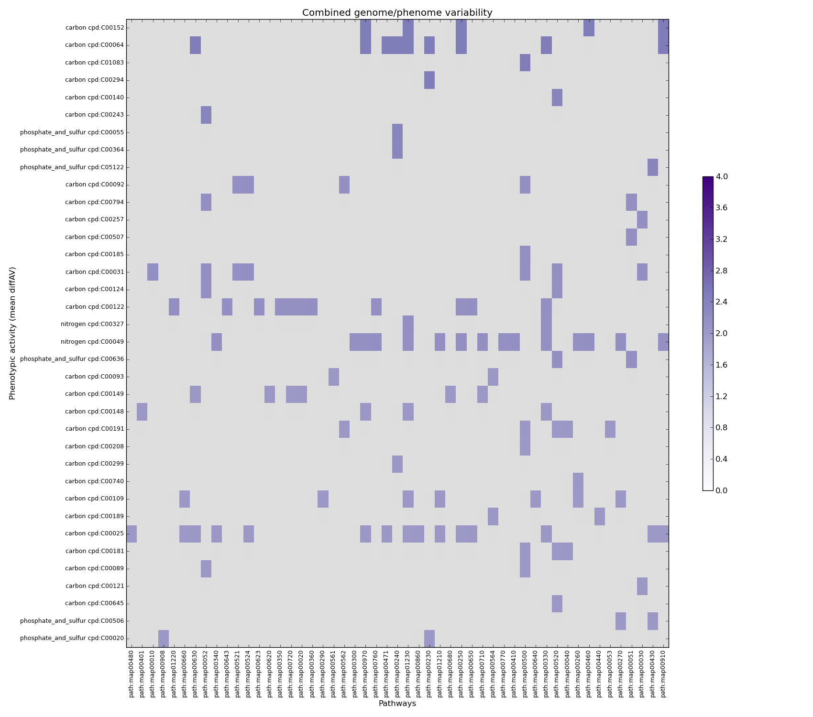Most of outputs of this command are stored inside the tmp/metNet directory. Inside that directory there will be many folders for each organism, one named ORG_ID, each one optionally containing one folder for each PM category. If the project contains many organisms, also the pangenome folders "all", "core", "dispensable", "accessory" and "unique" will be found. ANother folder named KEGG will also be found.
KEGG folderALL.gml overall network
PATH_ID.gml pathway network
Network in GML format with all the reactions and compounds inside the KEGG database. Each node represents a compound, while each edge represents a reaction. These files may be opened with programs like Gephi.
All, core, dispensable, accessory and unique foldersALL_CATEGORY.gml overall network
PATH_ID_CATEGORY.gml pathway network
Network in GML format with all the reactions mapped to the specific pangenome partition and compounds inside the KEGG database. Each node represents a compound, which weight is the average AV difference between each organism, while each edge represents a reaction, which weight represents the number of organisms having that reaction mapped. These files may be opened with programs like Gephi.
ORG_ID foldersORG_ID.gml overall network
ORG_ID_PATH_ID.gml pathway network
ORG_ID_CATEGORY.gml overall network
ORG_ID_CATEGORY_PATH_ID.gml pathway network
Network in GML format with all the reactions mapped to the specific organism and compounds inside the KEGG database. Each node represents a compound, which weight is the average AV, while each edge represents a reaction. These files may be opened with programs like Gephi.
Example gml representation inside Gephi

The outputs of this command are stored inside the tmp/keggmaps directory. Inside that directory there will be many folders for each organism, one named ORG_ID and optionally one folder for each PM category, in the form ORG_ID_CATEGORY. If the project contains many organisms, also a pangenome directory plus optional pangenome_CATEGORY folders will be found.
The content of each folder is similar
PATH_ID.png pathway colored map
A colored KEGG pathway, in which the reactions/compounds are colored according to their presence/activity inside that specific pathway. The color codes depend on the project type.
Pangenome 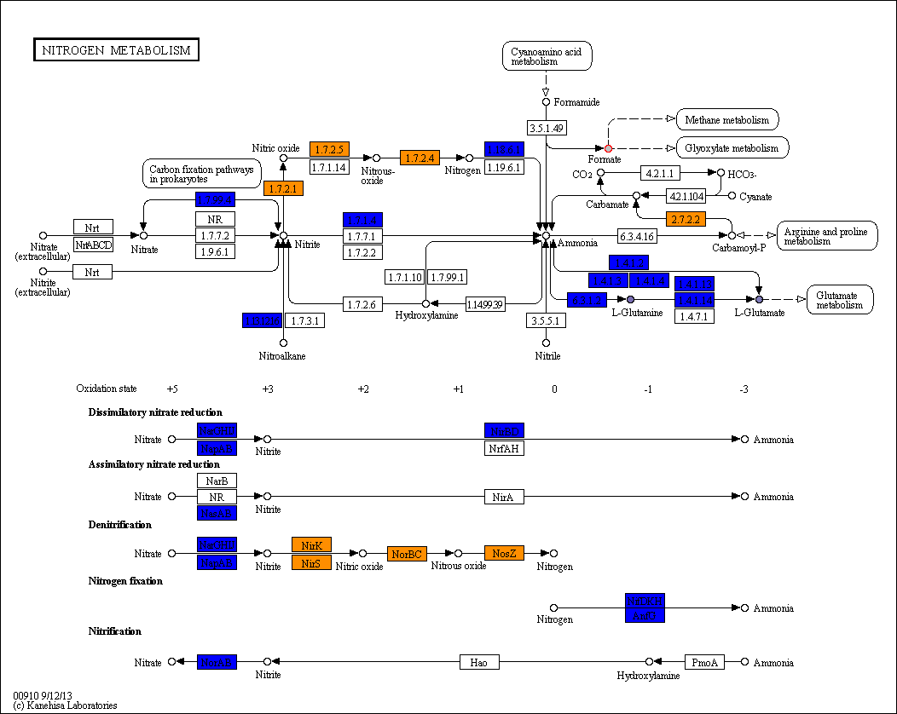- Reactions:
- White: reaction not present
- Blue: core reactions
- Green: core/dispensable reactions
- Shades of orange: dispensable reactions (color intensity proportional to the number of organisms in which the reaction is found)
- Compounds:
- White: compound not present in the PM experiment
- Gray: the mean AV difference between each organism is below the threshold provided
- Shades of purple: mean AV difference between each organism
- Red border: in one (or more) organisms the AV difference is above the threshold provided
- Reactions:
- White: reaction not present
- Blue: reaction present in the organism
- Yellow: reaction exclusively present in the organism (only in pangenomic projects)
- Compounds:
- White: compound not present in the PM experiment
- Color: the average AV for that compound in that specific organism
- Reactions:
- White: reaction not present
- Blue: reaction present in the wild-type AND the mutant
- Yellow: reaction present only in the wild-type (if deletion mutant) or only in the mutant (if insertion mutant)
- Compounds:
- White: compound not present in the PM experiment
- Gray: the AV difference w/r/t the wild-type is below the threshold provided
- Shades of purple: the AV difference w/r/t the wild-type is below zero
- Shades of purple: the AV difference w/r/t the wild-type is above zero
PATH_ID.html pathway colored map
A browsable colored KEGG pathway, in which the reactions/compounds are colored according to their presence/activity inside that specific pathway. The user can navigate from one map to another and can access to the KEGG page with relevant informations about reactions and compounds.
The pathway maps belong to the Kanehisa Laboratories; remember to cite them if you use this maps for further analysis.
file KEGG dump file
A file in tab delimited format containing a complete data dump from another DuctApe project file, obtained with the dape export command.
release 66.0 ko ko:K00014 aroE shikimate dehydrogenase [EC:1.1.1.25] 1 ko ko:K02342 DPO3E, dnaQ DNA polymerase III subunit epsilon [EC:2.7.7.7] 1 ko ko:K09773 K09773 hypothetical protein 1 [...] compound cpd:C15549 Anthocyanin None compound cpd:C15548 2-alpha-D-Glucosyl-D-glucose None compound cpd:C15547 1,4-Dihydroxy-2-naphthoyl-CoA None [...] reaction rn:R01696 L-Sorbose:acceptor 5-oxidoreductase L-Sorbose + Acceptor <=> 5-Dehydro-D-fructose + Reduced acceptor None reaction rn:R01695 L-Sorbose:oxygen 5-oxidoreductase L-Sorbose + Oxygen <=> 5-Dehydro-D-fructose + Hydrogen peroxide None reaction rn:R01694 L-Sorbose:NADP+ 5-oxidoreductase L-Sorbose + NADP+ <=> 5-Dehydro-D-fructose + NADPH + H+ 1.1.1.123 reaction rn:R01690 5'-butyrylphosphoinosine butyrylhydrolase 5'-Butyrylphosphoinosine + H2O <=> IMP + Butanoic acid 3.6.1.20 [...]
kegg.tsv KEGG dump file
A file in tab delimited format containing a complete KEGG data dump from the project file; it can be imported into another DuctApe project with the dape import.
release 66.0 ko ko:K00014 aroE shikimate dehydrogenase [EC:1.1.1.25] 1 ko ko:K02342 DPO3E, dnaQ DNA polymerase III subunit epsilon [EC:2.7.7.7] 1 ko ko:K09773 K09773 hypothetical protein 1 [...] compound cpd:C15549 Anthocyanin None compound cpd:C15548 2-alpha-D-Glucosyl-D-glucose None compound cpd:C15547 1,4-Dihydroxy-2-naphthoyl-CoA None [...] reaction rn:R01696 L-Sorbose:acceptor 5-oxidoreductase L-Sorbose + Acceptor <=> 5-Dehydro-D-fructose + Reduced acceptor None reaction rn:R01695 L-Sorbose:oxygen 5-oxidoreductase L-Sorbose + Oxygen <=> 5-Dehydro-D-fructose + Hydrogen peroxide None reaction rn:R01694 L-Sorbose:NADP+ 5-oxidoreductase L-Sorbose + NADP+ <=> 5-Dehydro-D-fructose + NADPH + H+ 1.1.1.123 reaction rn:R01690 5'-butyrylphosphoinosine butyrylhydrolase 5'-Butyrylphosphoinosine + H2O <=> IMP + Butanoic acid 3.6.1.20 [...]
dgenome
Genome and pangenome analysis
dgenome is the module used to analyze the genomic data, in particular it is used to map the proteins to the KEGG database (through a Blast analysis or parsing a KAAS output) and to calculate the pangenome.
file protein fasta file
A file in FASTA format containing all the protein sequences belonging to a specific organism (which should be already present inside the project file).
>Protein1 MRFLIPLVILGLPLAEIAGFVAVGREIGVAMTLLLVFASAVAGIMLLRIQGFGVLRRVQE AARTGNDPGLDVLGGVLIFIAAILLIVPGFISDLVGLLIFLPPVRRAIAAFLRRRMTILS SATGFYRSSRRQSPGPQSSGPQSSGPQSAGPQSAGTPREQRRGPLTIDLDEDEFSRKTKD EDDPPPDRPPH >Protein2 MNFQSSAFIFGDADLVKQLYVNLLTNATRHTPCGTAVELTLSSDAEWVKLIVSANGLGIP AAERTKVFGRFYRLDKTLGSPGTELGLSLVRAVADLHGGQIFLSDNRTGLVCTVSFPVAV GSSAFGA
file(s) protein fasta file
A directory containing file(s) in FASTA format containing all the protein sequences belonging to a specific organism (which should be already present inside the project file).
>Protein1 MRFLIPLVILGLPLAEIAGFVAVGREIGVAMTLLLVFASAVAGIMLLRIQGFGVLRRVQE AARTGNDPGLDVLGGVLIFIAAILLIVPGFISDLVGLLIFLPPVRRAIAAFLRRRMTILS SATGFYRSSRRQSPGPQSSGPQSSGPQSAGPQSAGTPREQRRGPLTIDLDEDEFSRKTKD EDDPPPDRPPH >Protein2 MNFQSSAFIFGDADLVKQLYVNLLTNATRHTPCGTAVELTLSSDAEWVKLIVSANGLGIP AAERTKVFGRFYRLDKTLGSPGTELGLSLVRAVADLHGGQIFLSDNRTGLVCTVSFPVAV GSSAFGA
kofile KAAS output file
A file in tab-delimited format containing the output of the KAAS annotator. The protein IDs should be already present inside the project file. Protein IDs with no KO id are discarded, as they haven't been mapped inside the KEGG database.
# Comment (ignored) #prot_id ko_id 2511498595 K09773 2511498596 K06287 2511498597 K00014 2511498598 2511498599 K02342
orthfile pangenome file
A file in tab-delimited format containing the information on the orthologous groups inside the pangenome. All the provided protein IDs should be already present inside the project file. Proteins having the same orth_id are orthologs.
# Comment (ignored) #orth_id prot_id pangenome_24 SinmeB_5617 pangenome_25 SinmeB_1216 pangenome_26 gi|15963768|ref|NP_384121.1| pangenome_27 gi|16264270|ref|NP_437062.1| pangenome_20 SinmeB_3109 pangenome_20 gi|15963755|ref|NP_384108.1| pangenome_20 2511498596 pangenome_20 gi|334318035|ref|YP_004550654.1| pangenome_21 SinmeB_3110 pangenome_21 gi|15963756|ref|NP_384109.1| pangenome_21 2511498597 pangenome_21 gi|334318036|ref|YP_004550655.1| [...]
ORG_ID.faa protein fasta file
A file in FASTA format containing all the protein sequences belonging to a specific organism (ORG_ID); one file for each organism is exported.
>Protein1 MRFLIPLVILGLPLAEIAGFVAVGREIGVAMTLLLVFASAVAGIMLLRIQGFGVLRRVQE AARTGNDPGLDVLGGVLIFIAAILLIVPGFISDLVGLLIFLPPVRRAIAAFLRRRMTILS SATGFYRSSRRQSPGPQSSGPQSSGPQSAGPQSAGTPREQRRGPLTIDLDEDEFSRKTKD EDDPPPDRPPH >Protein2 MNFQSSAFIFGDADLVKQLYVNLLTNATRHTPCGTAVELTLSSDAEWVKLIVSANGLGIP AAERTKVFGRFYRLDKTLGSPGTELGLSLVRAVADLHGGQIFLSDNRTGLVCTVSFPVAV GSSAFGA
ko_ORG_ID.tsv KAAS output file
A file in tab-delimited format containing an output equivalent to the KAAS annotator; one file for each organism is exported.
# Comment (ignored) #prot_id ko_id 2511498595 K09773 2511498596 K06287 2511498597 K00014 2511498598 2511498599 K02342
ko_merged_ORG_ID.tsv KAAS output file
A file in tab-delimited format containing an output equivalent to the KAAS annotator; this file contains those proteins that have been annotated by DuctApe, because they were orthologs to another protein annotated by KEGG; one file for each organism is exported.
# Comment (ignored) #prot_id ko_id 2511498595 K09773 2511498596 K06287 2511498597 K00014 2511498598 2511498599 K02342
ko_multiple_ORG_ID.tsv KAAS output file
A file in tab-delimited format containing an output equivalent to the KAAS annotator; this file contains those proteins that are mapped to more than one ko_id, thus having a multiple KEGG annotation; one file for each organism is exported.
# Comment (ignored) #prot_id ko_id 2511498595 K09773 2511498596 K06287 2511498597 K00014 2511498598 2511498599 K02342
ko_multiple.tsv multiple annotation file
A file containing the orthologous groups ID in which more than one KEGG annotation has been found.
# Comment (ignored) #group_id pangenome_24 pangenome_331 pangenome_1256
reactions_ORG_ID.tsv reactions file
A file in tab-delimited format containing all the KEGG reactions mapped to each protein inside the project; one file for each organism is exported.
# Comment (ignored) #prot_id re_id name description pathway(s) gi|15963756|ref|NP_384109.1| R02413 Shikimate:NADP+ 3-oxidoreductase Shikimate + NADP+ <=> 3-Dehydroshikimate + NADPH + H+ map00400,map01100,map01110,map01230 gi|15963757|ref|NP_384110.1| R00130 ATP:dephospho-CoA 3'-phosphotransferase ATP + Dephospho-CoA <=> ADP + CoA map00770,map01100 gi|15963758|ref|NP_384111.1| R00375 Deoxyadenosine 5'-triphosphate:DNA deoxynucleotidyltransferase (DNA-directed) dATP + DNA <=> Diphosphate + DNA map00230,map01100 gi|15963758|ref|NP_384111.1| R00376 Deoxyguanosine 5'-triphosphate:DNA deoxynucleotidyltransferase (DNA-directed) dGTP + DNA <=> Diphosphate + DNA map00230,map01100 gi|15963758|ref|NP_384111.1| R00377 Deoxycytidine triphosphate:DNA deoxynucleotidyltransferase (DNA-directed) dCTP + DNA <=> Diphosphate + DNA map00240,map01100 gi|15963758|ref|NP_384111.1| R00378 deoxythymidine triphosphate:DNA deoxynucleotidyltransferase (DNA-directed) dTTP + DNA <=> Diphosphate + DNA map00240,map01100 gi|15963767|ref|NP_384120.1| R00713 Succinate-semialdehyde:NAD+ oxidoreductase Succinate semialdehyde + NAD+ + H2O <=> Succinate + NADH + H+map00250,map00350,map00650,map01100,map01120
The various fields are defined in the table below.
| Field | Description | Example |
|---|---|---|
| prot_id | Protein ID | gi|15963756|ref|NP_384109.1| |
| re_id | Reaction ID | R04942 |
| name | Reaction name | L-Serine hydro-lyase (adding homocysteine) |
| description | Reaction details | L-Serine + Selenohomocysteine <=> L-Selenocystathionine + H2O |
| pathway(s) | Pathways in which the reaction is mapped (comma separated list) | map00240,map01100 |
reactions_exclusive_ORG_ID.tsv reactions file
A file in tab-delimited format containing those KEGG reaction IDs that are exclusive to one organism when compared to the others; one file for each organism is exported (if they have at least one exclusive reaction). If the project contains multiple organisms and the pangenome has been estimated, one file for the core, dispensable, accessory and unique pangenome partitions is exported, containing the exclusive reactions for each partition.
# Comment (ignored) #re_id name description pathway(s) R04942 L-Serine hydro-lyase (adding homocysteine) L-Serine + Selenohomocysteine <=> L-Selenocystathionine + H2O R01663 dCMP aminohydrolase dCMP + H2O <=> dUMP + Ammonia map00240,map01100 R06979 Ectoine hydro-lyase N-gamma-Acetyldiaminobutyrate <=> H2O + Ectoine map00260,map01100,map01120,map01210 R01290 L-serine hydro-lyase (adding homocysteine; L-cystathionine-forming) L-Serine + L-Homocysteine <=> L-Cystathionine + H2O map00260 R00891 L-serine hydro-lyase (adding hydrogen sulfide, L-cysteine-forming) L-Serine + Hydrogen sulfide <=> L-Cysteine + H2O map00260
The various fields are defined in the table below.
| Field | Description | Example |
|---|---|---|
| re_id | Reaction ID | R04942 |
| name | Reaction name | L-Serine hydro-lyase (adding homocysteine) |
| description | Reaction details | L-Serine + Selenohomocysteine <=> L-Selenocystathionine + H2O |
| pathway(s) | Pathways in which the reaction is mapped (comma separated list) | map00240,map01100 |
ecnumbers_ORG_ID.tsv E.C. numbers file
A file in tab-delimited format containing all the E.C. numbers mapped to each protein inside the project; one file for each organism is exported.
# Comment (ignored) #prot_id EC_number gi|16263739|ref|NP_436532.1| 1.11.1.6 gi|16263739|ref|NP_436532.1| 1.11.1.7 gi|16263739|ref|NP_436532.1| 1.11.1.21 gi|16263739|ref|NP_436532.1| 1.11.1.7 gi|16263739|ref|NP_436532.1| 1.11.1.21 gi|16263739|ref|NP_436532.1| 1.11.1.6 gi|16263739|ref|NP_436532.1| 1.11.1.21
pangenome.tsv pangenome file
A file in tab-delimited format containing the information on the orthologous groups inside the pangenome. Proteins having the same orth_id are orthologs.
# Comment (ignored) #orth_id prot_id pangenome_24 SinmeB_5617 pangenome_25 SinmeB_1216 pangenome_26 gi|15963768|ref|NP_384121.1| pangenome_27 gi|16264270|ref|NP_437062.1| pangenome_20 SinmeB_3109 pangenome_20 gi|15963755|ref|NP_384108.1| pangenome_20 2511498596 pangenome_20 gi|334318035|ref|YP_004550654.1| pangenome_21 SinmeB_3110 pangenome_21 gi|15963756|ref|NP_384109.1| pangenome_21 2511498597 pangenome_21 gi|334318036|ref|YP_004550655.1| [...]
pangenome_category.tsv pangenome file
A file in tab-delimited format containing the information on the orthologous groups inside the pangenome. This file indicated the pangenome partition to which each orthologous group belongs to and to which organism the proteins of each group belong to.
# Comment (ignored) #orth_id category organism(s) pangenome_10 core AK58-AK83-BL225C-Rm1021 pangenome_12 core AK58-AK83-BL225C-Rm1021 pangenome_13 core AK58-AK83-BL225C-Rm1021 pangenome_1 accessory AK58-BL225C pangenome_11 accessory AK83-BL225C pangenome_2 accessory AK58-BL225C-Rm1021 pangenome_23 accessory AK58-BL225C-Rm1021 pangenome_24 unique BL225C pangenome_25 unique BL225C pangenome_26 unique Rm1021 pangenome_27 unique Rm1021 [...]
| Field | Description | Example |
|---|---|---|
| group_id | Orthologous group ID | pangenome_1 |
| category | Pangenome partition to which the group_id belongs to; core (present in all the organisms), accessory (present in 2 to n-1 organisms), unique (present in only one organism). | core |
| organism(s) | List of the organisms having at least one protein inside the group, separated by "-". | Rm1021-BL225C |
Please remind that the dispensable genome contains both the accessory and the unique genome.
single.png kegg annotation histogram
A histogram showing KEGG annotation statistics for each organism inside the project.
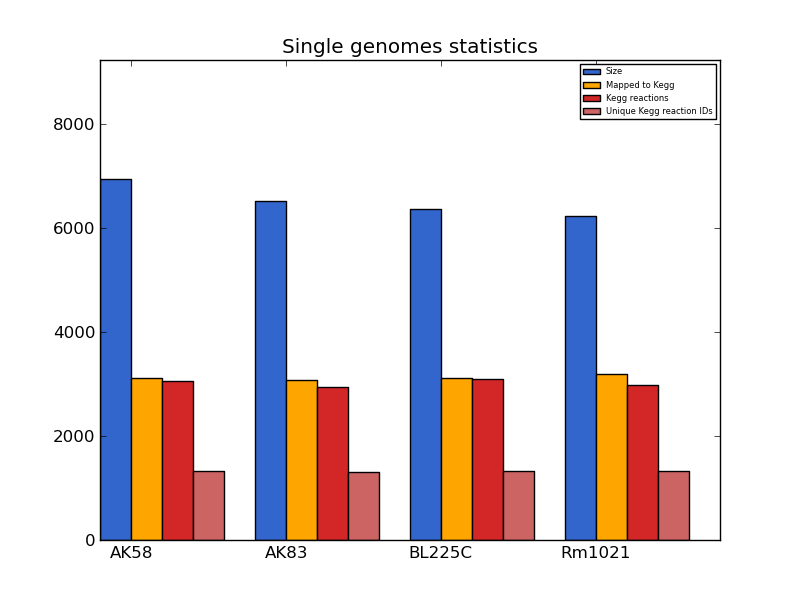pangenome_stats.png kegg annotation histogram
A histogram showing KEGG annotation statistics for each pangenome partition (if available).
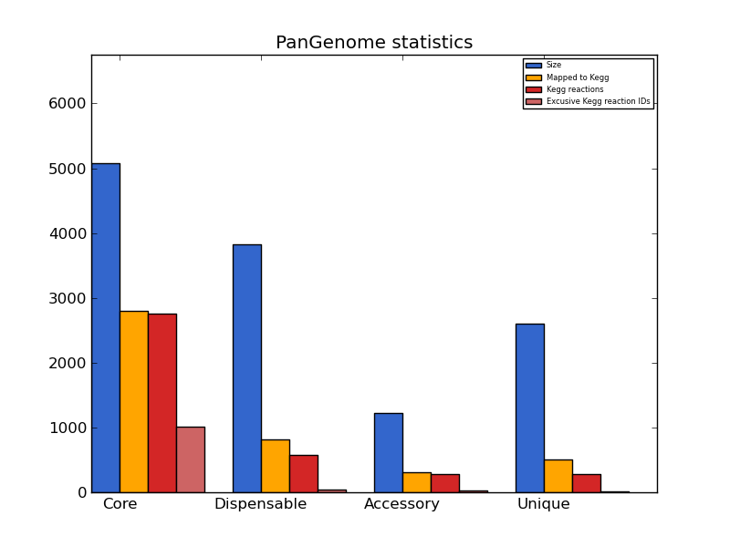pangenome_shape.png pangenome partition pie chart
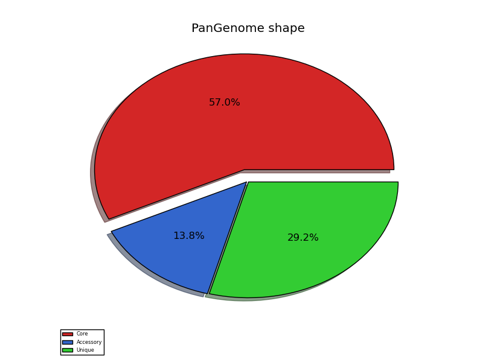dphenome
Phenome analysis
dphenome is the module used to analyze the phenomic data, in particular it is used to analyze the growth curves and to map the phenomic compounds to KEGG.
file Phenotype Microarray file
A file containing one or more plates data on a single organism. The file can be either in csv, YAML or JSON format: csv files are usually obtained directly from the PM analysis, while YAML or JSON files may be obtained from other software, like opm. YAML/JSON files may contain additional information than a normal csv file; DuctApe is able to import also aggregated data (i.e. the curve parameters for each well), as well as the name of the software that has produced the aggregated data.
The organism ID should be present in one of the following fields of the csv file: "Strain Name", "Strain Number", "Sample Number".
The aggregated data should be provided as in the example below:
[...]
aggr_settings:
method: opm-fast
options:
boot: 0.0
software: opm
version: 0.9.1
aggregated:
A01:
mu: .na.real
lambda: .na.real
A: 95.0
AUC: 4815.75
mu CI95 low: .na.real
lambda CI95 low: .na.real
A CI95 low: 95.0
AUC CI95 low: .na.real
mu CI95 high: .na.real
lambda CI95 high: .na.real
A CI95 high: 95.0
AUC CI95 high: .na.real
[...]
The aggregated data should be provided as in the example below:
[...]
"aggr_settings":
{"options": {"Dummy": "Dummy"},
"method": "DuctApe",
"software": "DuctApe"},
"aggregated":
{"A01": {"A": 3.00260390984,
"lambda CI95 low": ".na.real",
"AUC": 57.3016561932,
"lambda CI95 high": ".na.real",
"A CI95 high": ".na.real",
"AUC CI95 high": ".na.real",
"A CI95 low": ".na.real",
"mu": 0.0,
"mu CI95 high": ".na.real",
"AUC CI95 low": ".na.real",
"mu CI95 low": ".na.real",
"lambda": 0.0},
[...]
The curve parameters names correspondence to the ones produced by DuctApe are outlined in the table below: when a field has a value of NA or .na.real it is treated as missing. The fields with CI95 denote the 95% confidence, but they are ignored by DuctApe.
| DuctApe parameter | YAML/JSON name | Description |
|---|---|---|
| max | A | Highest point in the curve |
| area | AUC | Area under the curve |
| lag | lambda | Lag-time; the time point in which the curve starts to grow exponentially |
| slope | mu | Curve slope in the exponential phase |
file Phenotype Microarray file
A file containing one or more plates data on one or more organism. The file can be either in csv, YAML or JSON format: csv files are usually obtained directly from the PM analysis, while YAML or JSON files may be obtained from other software, like opm. YAML/JSON files may contain additional information than a normal csv file; DuctApe is able to import also aggregated data (i.e. the curve parameters for each well), as well as the name of the software that has produced the aggregated data.
The organism ID should be present in the "Strain name" field of the csv file.
The aggregated data should be provided as in the example below:
[...]
aggr_settings:
method: opm-fast
options:
boot: 0.0
software: opm
version: 0.9.1
aggregated:
A01:
mu: .na.real
lambda: .na.real
A: 95.0
AUC: 4815.75
mu CI95 low: .na.real
lambda CI95 low: .na.real
A CI95 low: 95.0
AUC CI95 low: .na.real
mu CI95 high: .na.real
lambda CI95 high: .na.real
A CI95 high: 95.0
AUC CI95 high: .na.real
[...]
The aggregated data should be provided as in the example below:
[...]
"aggr_settings":
{"options": {"Dummy": "Dummy"},
"method": "DuctApe",
"software": "DuctApe"},
"aggregated":
{"A01": {"A": 3.00260390984,
"lambda CI95 low": ".na.real",
"AUC": 57.3016561932,
"lambda CI95 high": ".na.real",
"A CI95 high": ".na.real",
"AUC CI95 high": ".na.real",
"A CI95 low": ".na.real",
"mu": 0.0,
"mu CI95 high": ".na.real",
"AUC CI95 low": ".na.real",
"mu CI95 low": ".na.real",
"lambda": 0.0},
[...]
The curve parameters names correspondence to the ones produced by DuctApe are outlined in the table below: when a field has a value of NA or .na.real it is treated as missing. The fields with CI95 denote the 95% confidence, but they are ignored by DuctApe.
| DuctApe parameter | YAML/JSON name | Description |
|---|---|---|
| max | A | Highest point in the curve |
| area | AUC | Area under the curve |
| lag | lambda | Lag-time; the time point in which the curve starts to grow exponentially |
| slope | mu | Curve slope in the exponential phase |
file(s) Phenotype Microarray file
A directory containing one or more files with plates data. The file can be either in csv, YAML or JSON format: csv files are usually obtained directly from the PM analysis, while YAML or JSON files may be obtained from other software, like opm. YAML/JSON files may contain additional information than a normal csv file; DuctApe is able to import also aggregated data (i.e. the curve parameters for each well), as well as the name of the software that has produced the aggregated data.
The organism ID should be present in one of the following fields of the csv file: "Strain Name", "Strain Number", "Sample Number".
The aggregated data should be provided as in the example below:
[...]
aggr_settings:
method: opm-fast
options:
boot: 0.0
software: opm
version: 0.9.1
aggregated:
A01:
mu: .na.real
lambda: .na.real
A: 95.0
AUC: 4815.75
mu CI95 low: .na.real
lambda CI95 low: .na.real
A CI95 low: 95.0
AUC CI95 low: .na.real
mu CI95 high: .na.real
lambda CI95 high: .na.real
A CI95 high: 95.0
AUC CI95 high: .na.real
[...]
The aggregated data should be provided as in the example below:
[...]
"aggr_settings":
{"options": {"Dummy": "Dummy"},
"method": "DuctApe",
"software": "DuctApe"},
"aggregated":
{"A01": {"A": 3.00260390984,
"lambda CI95 low": ".na.real",
"AUC": 57.3016561932,
"lambda CI95 high": ".na.real",
"A CI95 high": ".na.real",
"AUC CI95 high": ".na.real",
"A CI95 low": ".na.real",
"mu": 0.0,
"mu CI95 high": ".na.real",
"AUC CI95 low": ".na.real",
"mu CI95 low": ".na.real",
"lambda": 0.0},
[...]
The curve parameters names correspondence to the ones produced by DuctApe are outlined in the table below: when a field has a value of NA or .na.real it is treated as missing. The fields with CI95 denote the 95% confidence, but they are ignored by DuctApe.
| DuctApe parameter | YAML/JSON name | Description |
|---|---|---|
| max | A | Highest point in the curve |
| area | AUC | Area under the curve |
| lag | lambda | Lag-time; the time point in which the curve starts to grow exponentially |
| slope | mu | Curve slope in the exponential phase |
file custom plate definition file
A tab-delimited file containing the definition of a custom PM plate to be added to the project. More than one plate can be defined in each file; each plate should contain 96 wells.
# Comment (ignored) PM33C A01 0 Negative Control C-Source, negative control scarbon PM33C A02 0 A01 L-Arabinose CAS 87-72-9 C00259 C-Source, carbohydrate carbon PM33C A03 0 A01 N-Acetyl-D-Glucosamine CAS 7512-17-6 C00140 C-Source, carbohydrate carbon PM33C A04 0 A01 D-Saccharic acid CAS 576-42-1 C00818 C-Source, carboxylic acid carbon PM33C A05 0 A01 Succinic acid CAS 6106-21-4 C00042 C-Source, carboxylic acid carbon PM33C A06 0 A01 D-Galactose CAS 59-23-4 C00124 C-Source, carbohydrate carbon PM33C A07 0 A01 L-Aspartic acid CAS 3792-50-5 C00049 C-Source, amino acid carbon PM33C A08 0 A01 L-Proline CAS 147-85-3 C00148 C-Source, amino acid carbon PM33C A09 0 A01 D-Alanine CAS 338-69-2 C00133 C-Source, amino acid carbon PM33C A10 0 A01 D-Trehalose CAS 6138-23-4 C01083 C-Source, carbohydrate carbon PM33C A11 0 A01 D-Mannose CAS 3458-28-4 C00159 C-Source, carbohydrate carbon PM33C A12 0 A01 Dulcitol CAS 608-66-2 C01697 C-Source, carbohydrate carbon PM33C B01 0 A01 D-Serine CAS 312-84-5 C00740 C-Source, amino acid carbon PM33C B02 0 A01 D-Sorbitol CAS 50-70-4 C00794 C-Source, carbohydrate carbon PM33C B03 0 A01 Glycerol CAS 56-81-5 C00116 C-Source, carbohydrate carbon PM33C B04 0 A01 L-Fucose CAS 2438-80-4 C01019 C-Source, carbohydrate carbon [...]
The various fields are defined in the table below.
| Field | Description | Example |
|---|---|---|
| plate_id | PM plate ID | PM35 |
| well_id | PM well ID; should follow the following format: first charachter a upper-case letter from A to H, second and third charachters a number from 01 to 12. | A02 |
| concentration | Used for those wells having the same compound but at different concentrations (like PM11-20, where each compound is present in four wells with different concentrations); value can be either 0 (single well), or an integer from 1 to the number of wells with the same compound. | 0 |
| zero_well_id | Used for plates in which the contral signal can be subtracted; indicates the well_id from which subtract the control signal. If no value is provided that particular well is either a negative control signal or its signal can't be subtracted. | A01 |
| chemical | Name of the compound contained in the well. | L-Arabinose |
| cas_id | The CAS ID for the compound contained in the well. | CAS 87-72-9 |
| co_id | The KEGG compound ID for the compound contained in the well. | C00259 |
| moa | The "mode of action" of the compound contained in the well. It's a comma separated list of nested classifications of the compound, from the most general to the most specific. | C-Source, carbohydrate |
| category | Used to classify each well with other wells present in the project; should describe the class of compounds contained in the plate. | carbon |
zero_kmeans.png PM data clusterization details
A scatter plot showing the relationships between each curve parameter and the clusterization of each curve. Each dot represent a distinct curve, while the color is relative to the AV (red, lower cluster; green highest cluster). The clusters are ordered by the area parameter. This plot shows the parameters of those curves in which the control signal has been subtracted.
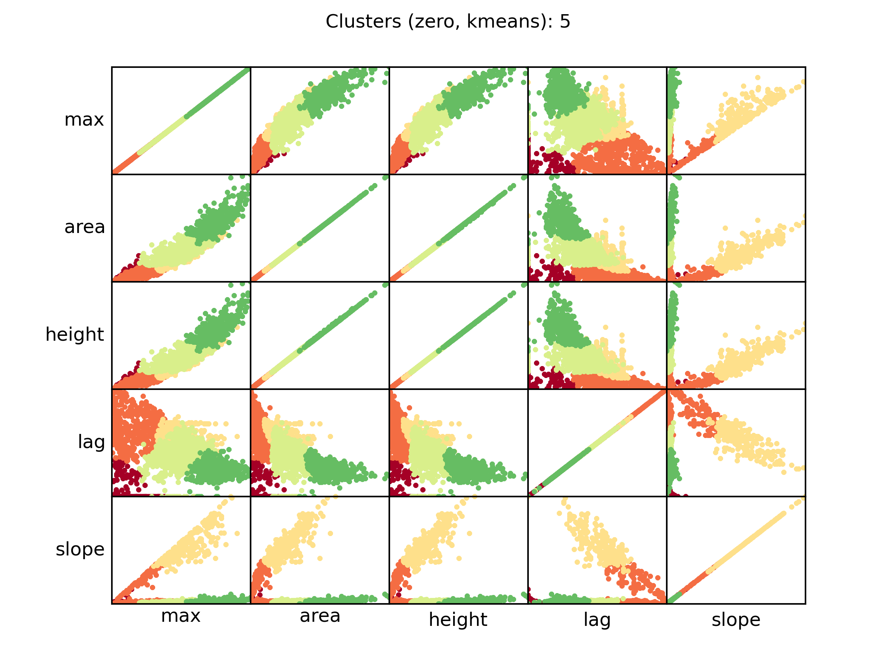nonzero_kmeans.png PM data clusterization details
A scatter plot showing the relationships between each curve parameter and the clusterization of each curve. Each dot represent a distinct curve, while the color is relative to the AV (red, lower cluster; green highest cluster). The clusters are ordered by the area parameter. This plot shows the parameters of those curves in which the control signal has NOT been subtracted.
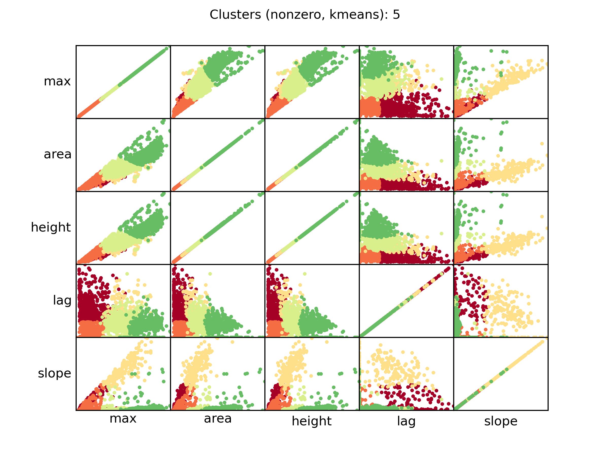elbow.png PM data clusterization elbow test
An elbow test plot that may be used to decide the optimal number of clusters for the PM data; as a rule of thumb, the number of clusters that reduces the most the sum of sqaured errors should be used.

The outputs of this command are stored inside the tmp/plots/phenome directory. Inside that directory there will be one directory for each category of the PM plates (carbon, nitrogen, ...). Inside each category directory a series of plots can be found.
If the option -n has been used "phenome" may have been replaced by another name.
PLATE_ID.png overall plate plot
A schematic representation of the 96-wells plate, showing for each well one curve for each organism (if replicas are available, the maximum/minimum extent is displayed). The color of each curve can be associated to the corresponding organism by looking at the PLATE_ID_legend.png file.
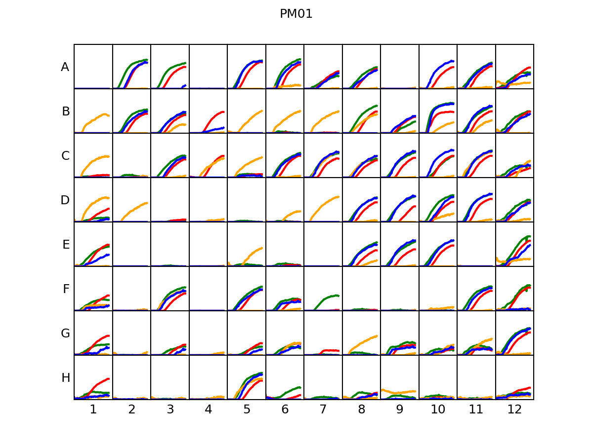PLATE_ID_WELL_ID.png single well plot
A single well plot, showing one curve for each organism (if replicas are available, the maximum/minimum extent is displayed). The time (expressed in hours) is showed in the x-axis, while the color intensity is showed in the y-axis. The color of each curve can be associated to the corresponding organism by looking at the PLATE_ID_legend.png file.
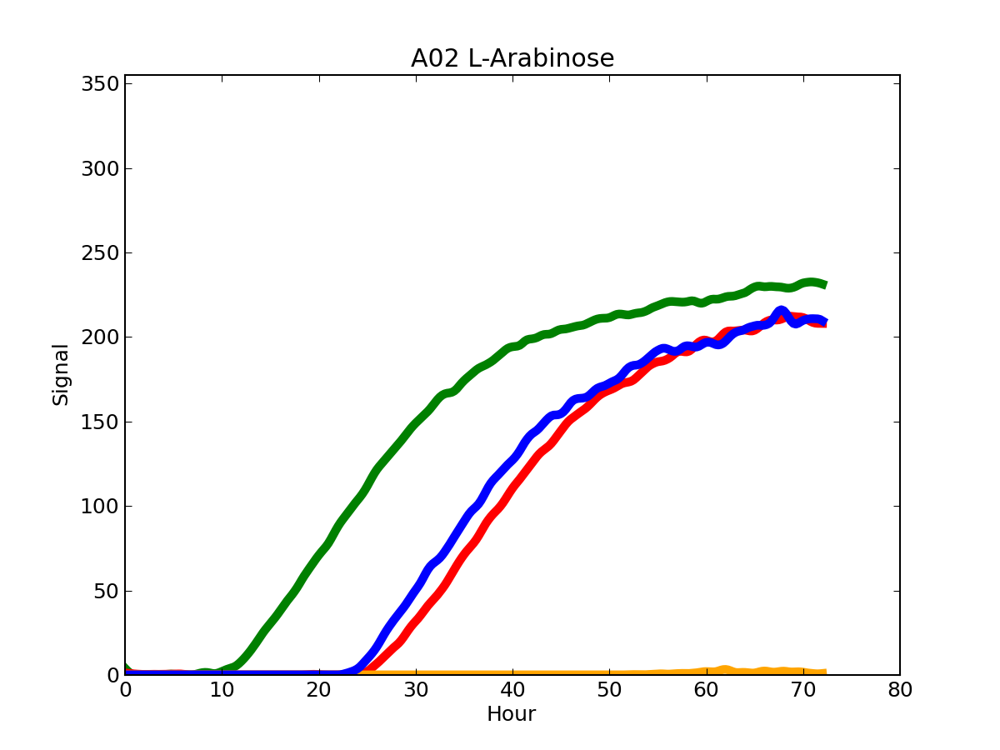PLATE_IDheat.png overall plate AV heatmap
A schematic representation of the 96-wells plate, showing for each well the AV value for each organism (if replicas are available, the average value id displayed). The position of each organism can be obtained by looking at the PLATE_ID_legend.png file.
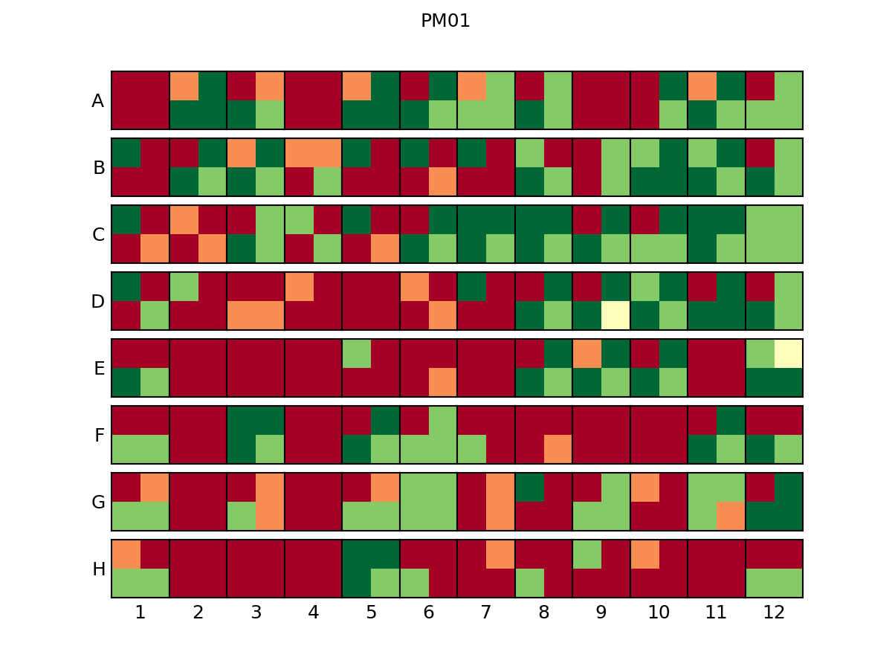PLATE_ID_legend.png color/position reference
For each organism, the color used in the curves and its position inside the heatmap is displayed.
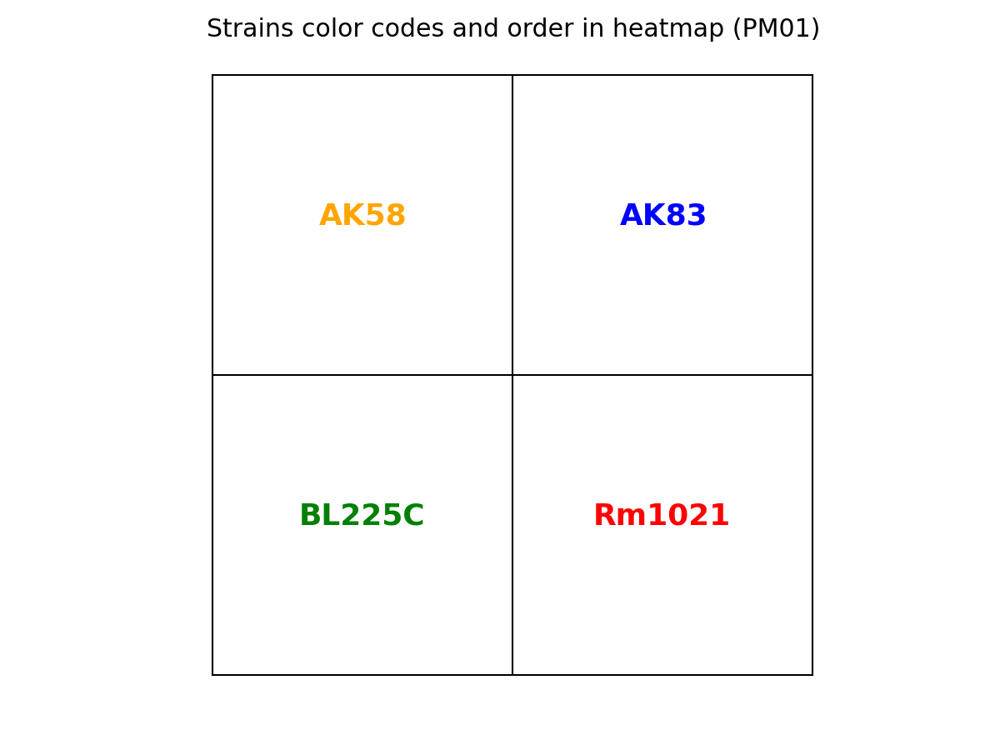ActivityRing.png overall PM data in ring format
A schematic representation of the whole PM experiment; each organism is represented as a circle, in which each segment represent a single compound, colored according to its AV. The inner circles indicate the order of the organisms. If the project contains mutants (or the -o option ahs been used), for some organisms the AV difference against the reference genome is displayed: if the difference is below the provided threshold no color is showed.
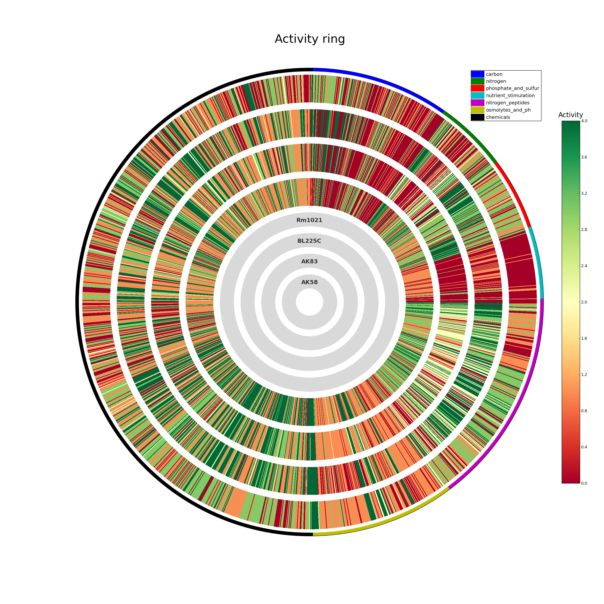 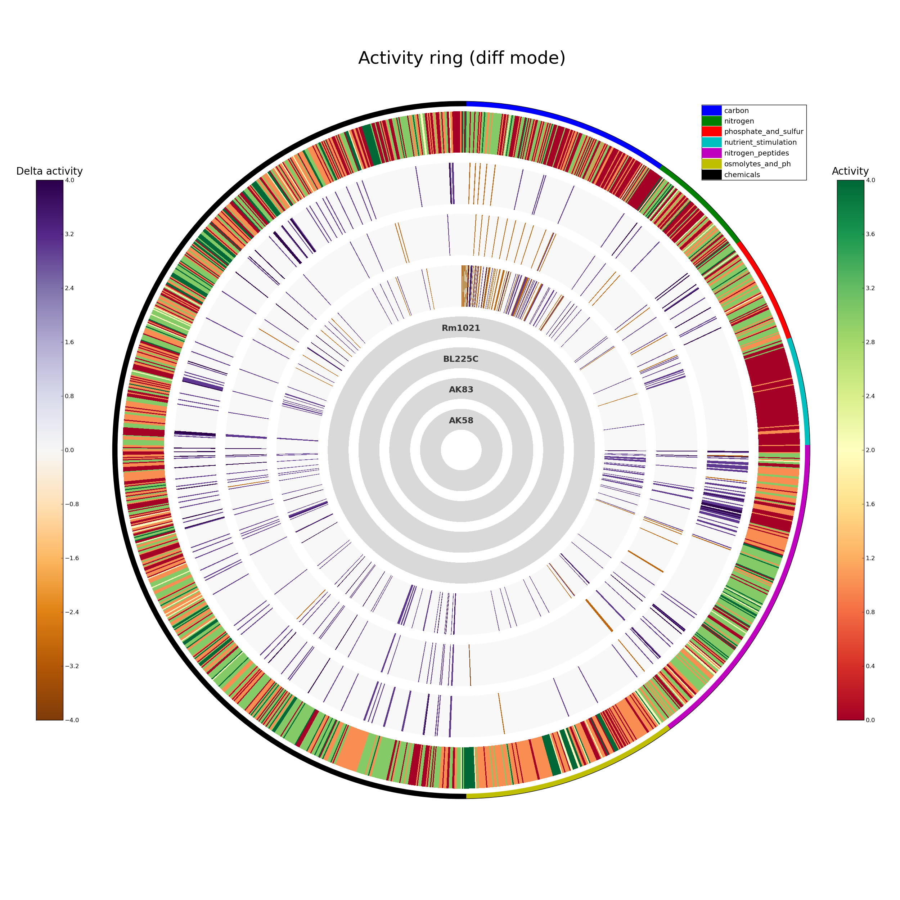biolog.tsv PM plates definition table
A tab-delimited file containing the definition of the PM plates present inside the project.
# Comment (ignored) #plate_id well_id concentration zero_well_id chemical cas_id co_id moa category PM01 A01 0 None Negative Control None None C-Source, negative control carbon PM01 A02 0 A01 L-Arabinose CAS 87-72-9 C00259 C-Source, carbohydrate carbon PM01 A03 0 A01 N-Acetyl-D-Glucosamine CAS 7512-17-6 C00140 C-Source, carbohydrate carbon PM01 A04 0 A01 D-Saccharic acid CAS 576-42-1 C00818 C-Source, carboxylic acid carbon PM01 A05 0 A01 Succinic acid CAS 6106-21-4 C00042 C-Source, carboxylic acid carbon PM01 A06 0 A01 D-Galactose CAS 59-23-4 C00124 C-Source, carbohydrate carbon PM01 A07 0 A01 L-Aspartic acid CAS 3792-50-5 C00049 C-Source, amino acid carbon PM01 A08 0 A01 L-Proline CAS 147-85-3 C00148 C-Source, amino acid carbon PM01 A09 0 A01 D-Alanine CAS 338-69-2 C00133 C-Source, amino acid carbon PM01 A10 0 A01 D-Trehalose CAS 6138-23-4 C01083 C-Source, carbohydrate carbon PM01 A11 0 A01 D-Mannose CAS 3458-28-4 C00159 C-Source, carbohydrate carbon PM01 A12 0 A01 Dulcitol CAS 608-66-2 C01697 C-Source, carbohydrate carbon PM01 B01 0 A01 D-Serine CAS 312-84-5 C00740 C-Source, amino acid carbon PM01 B02 0 A01 D-Sorbitol CAS 50-70-4 C00794 C-Source, carbohydrate carbon PM01 B03 0 A01 Glycerol CAS 56-81-5 C00116 C-Source, carbohydrate carbon PM01 B04 0 A01 L-Fucose CAS 2438-80-4 C01019 C-Source, carbohydrate carbon [...]
The various fields are defined in the table below.
| Field | Description | Example |
|---|---|---|
| plate_id | PM plate ID | PM01 |
| well_id | PM well ID; should follow the following format: first charachter a upper-case letter from A to H, second and third charachters a number from 01 to 12. | A02 |
| concentration | Used for those wells having the same compound but at different concentrations (like PM11-20, where each compound is present in four wells with different concentrations); value can be either 0 (single well), or an integer from 1 to the number of wells with the same compound. | 0 |
| zero_well_id | Used for plates in which the contral signal can be subtracted; indicates the well_id from which subtract the control signal. If no value is provided that particular well is either a negative control signal or its signal can't be subtracted. | A01 |
| chemical | Name of the compound contained in the well. | L-Arabinose |
| cas_id | The CAS ID for the compound contained in the well. | CAS 87-72-9 |
| co_id | The KEGG compound ID for the compound contained in the well. | C00259 |
| moa | The "mode of action" of the compound contained in the well. It's a comma separated list of nested classifications of the compound, from the most general to the most specific. | C-Source, carbohydrate |
| category | Used to classify each well with other wells present in the project; should describe the class of compounds contained in the plate. | carbon |
PLATE_ID_ORG_ID_REPLICA.yml Phenotype Microarray file
A file containing one plates data on one organism and one replica. The file can be either in YAML or JSON format, depending on the option provided. YAML or JSON files may be used by other software, like opm, or be stored.
phenome_ORG_ID.tsv phenome parameters table
A tab-delimited file containing the curve parameters for each compound in the provided organism.
# Comment (ignored) #plate_id well_id chemical category moa co_id replica activity min max height plateau slope lag area source PM01 A01 Negative Control carbon C-Source, negative control 1 0 0.0 0.0 0.0 0.0 0.0 0.0 0.0 DuctApe PM01 A02 L-Arabinose carbon C-Source, carbohydrate C00259 1 4 0.1 212.876351661 88.4481873788 217.820042396 8.17836437167 26.5905182274 6222.53364031 DuctApe PM01 A03 N-Acetyl-D-Glucosamine carbon C-Source, carbohydrate C00140 1 3 0.1 175.750723251 72.2820872802 180.106135342 6.19972356011 25.4451576156 5084.32121119 DuctApe PM01 A04 D-Saccharic acid carbon C-Source, carboxylic acid C00818 1 0 0.1 0.1 0.1 0.0 0.0 0.0 7.05 DuctApe PM01 A05 Succinic acid carbon C-Source, carboxylic acid C00042 1 4 0.1 215.615477063 89.6254004782 225.986240731 7.30545393964 24.904552184 6305.05627692 DuctApe PM01 A06 D-Galactose carbon C-Source, carbohydrate C00124 1 3 0.1 192.507967471 70.0603851535 196.340666445 7.67622266928 30.6220829804 4919.67860561 DuctApe PM01 A07 L-Aspartic acid carbon C-Source, amino acid C00049 1 3 0.1 138.538227924 52.3515997237 152.92481527 4.05461063968 25.5909464203 3678.06214484 DuctApe PM01 A08 L-Proline carbon C-Source, amino acid C00148 1 3 0.1 159.426424525 55.242482911 174.544222968 4.97915743191 28.8880663867 3876.20449821 DuctApe PM01 A09 D-Alanine carbon C-Source, amino acid C00133 1 0 0.1 0.1 0.1 0.0 0.0 0.0 7.05 DuctApe PM01 A10 D-Trehalose carbon C-Source, carbohydrate C01083 1 3 0.1 172.360816522 67.9253535538 180.98680765 5.74067225952 26.089886528 4775.07888792 DuctApe PM01 A11 D-Mannose carbon C-Source, carbohydrate C00159 1 3 0.1 180.324918868 72.034665281 187.654279607 5.84619375648 25.388251942 5064.8736555 DuctApe PM01 A12 Dulcitol carbon C-Source, carbohydrate C01697 1 3 3.20889170278 169.115730471 70.3661407768 180.043552333 4.72459819003 24.9793274449 4948.97009753 DuctApe PM01 B01 D-Serine carbon C-Source, amino acid C00740 1 0 0.1 1.43523714004 0.19528979129 0.0 0.0 0.0 13.7977201409 DuctApe PM01 B02 D-Sorbitol carbon C-Source, carbohydrate C00794 1 3 0.1 157.074255439 59.6792654806 162.450723993 5.91004239304 28.9002668047 4193.74610059 DuctApe [...]
The various fields are defined in the table below.
| Field | Description | Example |
|---|---|---|
| plate_id | PM plate ID | PM01 |
| well_id | PM well ID; should follow the following format: first charachter a upper-case letter from A to H, second and third charachters a number from 01 to 12. | A02 |
| chemical | Name of the compound contained in the well. | L-Arabinose |
| category | Used to classify each well with other wells present in the project; should describe the class of compounds contained in the plate. | carbon |
| moa | The "mode of action" of the compound contained in the well. It's a comma separated list of nested classifications of the compound, from the most general to the most specific. | C-Source, carbohydrate |
| co_id | The KEGG compound ID for the compound contained in the well. | C00259 |
| replica | The replica ID for this curve. | 1 |
| Activity | The AV value for this curve. The higher the value, the higher the activity of the organism on the compound: the maximum AV value depends on the number of clusters defined when using the dphenome start. |
3 |
| min | Lowest point in the curve. | 0.0 |
| max | Highest point in the curve. | 150.2 |
| height | Average height of the curve. | 75.3 |
| plateau | Time point in which the curve reaches the stationary phase. | 55.3 |
| slope | The curve slope in the exponential phase. | 4.3 |
| lag | Time point in which the curve enters the exponential phase. | 20.5 |
| area | The area below the curve. | 20156.5 |
| source | The software responsible for the parameters extimation. | DuctApe |
phenome_ORG_ID.tsv phenome parameters table
A tab-delimited file containing the curve parameters for each compound in the provided organism.
# Comment (ignored) #plate_id well_id chemical category moa co_id replica activity min max height plateau slope lag area source PM01 A01 Negative Control carbon C-Source, negative control 1 0 0.0 0.0 0.0 0.0 0.0 0.0 0.0 DuctApe PM01 A02 L-Arabinose carbon C-Source, carbohydrate C00259 1 4 0.1 212.876351661 88.4481873788 217.820042396 8.17836437167 26.5905182274 6222.53364031 DuctApe PM01 A03 N-Acetyl-D-Glucosamine carbon C-Source, carbohydrate C00140 1 3 0.1 175.750723251 72.2820872802 180.106135342 6.19972356011 25.4451576156 5084.32121119 DuctApe PM01 A04 D-Saccharic acid carbon C-Source, carboxylic acid C00818 1 0 0.1 0.1 0.1 0.0 0.0 0.0 7.05 DuctApe PM01 A05 Succinic acid carbon C-Source, carboxylic acid C00042 1 4 0.1 215.615477063 89.6254004782 225.986240731 7.30545393964 24.904552184 6305.05627692 DuctApe PM01 A06 D-Galactose carbon C-Source, carbohydrate C00124 1 3 0.1 192.507967471 70.0603851535 196.340666445 7.67622266928 30.6220829804 4919.67860561 DuctApe PM01 A07 L-Aspartic acid carbon C-Source, amino acid C00049 1 3 0.1 138.538227924 52.3515997237 152.92481527 4.05461063968 25.5909464203 3678.06214484 DuctApe PM01 A08 L-Proline carbon C-Source, amino acid C00148 1 3 0.1 159.426424525 55.242482911 174.544222968 4.97915743191 28.8880663867 3876.20449821 DuctApe PM01 A09 D-Alanine carbon C-Source, amino acid C00133 1 0 0.1 0.1 0.1 0.0 0.0 0.0 7.05 DuctApe PM01 A10 D-Trehalose carbon C-Source, carbohydrate C01083 1 3 0.1 172.360816522 67.9253535538 180.98680765 5.74067225952 26.089886528 4775.07888792 DuctApe PM01 A11 D-Mannose carbon C-Source, carbohydrate C00159 1 3 0.1 180.324918868 72.034665281 187.654279607 5.84619375648 25.388251942 5064.8736555 DuctApe PM01 A12 Dulcitol carbon C-Source, carbohydrate C01697 1 3 3.20889170278 169.115730471 70.3661407768 180.043552333 4.72459819003 24.9793274449 4948.97009753 DuctApe PM01 B01 D-Serine carbon C-Source, amino acid C00740 1 0 0.1 1.43523714004 0.19528979129 0.0 0.0 0.0 13.7977201409 DuctApe PM01 B02 D-Sorbitol carbon C-Source, carbohydrate C00794 1 3 0.1 157.074255439 59.6792654806 162.450723993 5.91004239304 28.9002668047 4193.74610059 DuctApe [...]
The various fields are defined in the table below.
| Field | Description | Example |
|---|---|---|
| plate_id | PM plate ID | PM01 |
| well_id | PM well ID; should follow the following format: first charachter a upper-case letter from A to H, second and third charachters a number from 01 to 12. | A02 |
| chemical | Name of the compound contained in the well. | L-Arabinose |
| category | Used to classify each well with other wells present in the project; should describe the class of compounds contained in the plate. | carbon |
| moa | The "mode of action" of the compound contained in the well. It's a comma separated list of nested classifications of the compound, from the most general to the most specific. | C-Source, carbohydrate |
| co_id | The KEGG compound ID for the compound contained in the well. | C00259 |
| replica | The replica ID for this curve. | 1 |
| Activity | The AV value for this curve. The higher the value, the higher the activity of the organism on the compound: the maximum AV value depends on the number of clusters defined when using the dphenome start. |
3 |
| min | Lowest point in the curve. | 0.0 |
| max | Highest point in the curve. | 150.2 |
| height | Average height of the curve. | 75.3 |
| plateau | Time point in which the curve reaches the stationary phase. | 55.3 |
| slope | The curve slope in the exponential phase. | 4.3 |
| lag | Time point in which the curve enters the exponential phase. | 20.5 |
| area | The area below the curve. | 20156.5 |
| source | The software responsible for the parameters extimation. | DuctApe |
phenome_avg_ORG_ID.tsv phenome parameters table
A tab-delimited file containing the average AV value for each compound for a particular organism: produced only if more than one replica is present.
# Comment (ignored) #plate_id well_id chemical category moa co_id avg activity PM01 A01 Negative Control carbon C-Source, negative control 0.0 PM01 A02 L-Arabinose carbon C-Source, carbohydrate C00259 7.5 PM01 A03 N-Acetyl-D-Glucosamine carbon C-Source, carbohydrate C00140 8.0 PM01 A04 D-Saccharic acid carbon C-Source, carboxylic acid C00818 0.5 PM01 A05 Succinic acid carbon C-Source, carboxylic acid C00042 9.0 PM01 A06 D-Galactose carbon C-Source, carbohydrate C00124 7.0 PM01 A07 L-Aspartic acid carbon C-Source, amino acid C00049 7.5 PM01 A08 L-Proline carbon C-Source, amino acid C00148 7.5 PM01 A09 D-Alanine carbon C-Source, amino acid C00133 0.0 PM01 A10 D-Trehalose carbon C-Source, carbohydrate C01083 8.0 PM01 A11 D-Mannose carbon C-Source, carbohydrate C00159 8.5 PM01 A12 Dulcitol carbon C-Source, carbohydrate C01697 6.5 PM01 B01 D-Serine carbon C-Source, amino acid C00740 0.0 PM01 B02 D-Sorbitol carbon C-Source, carbohydrate C00794 7.5 PM01 B03 Glycerol carbon C-Source, carbohydrate C00116 6.5 [...]
The various fields are defined in the table below.
| Field | Description | Example |
|---|---|---|
| plate_id | PM plate ID | PM01 |
| well_id | PM well ID; should follow the following format: first charachter a upper-case letter from A to H, second and third charachters a number from 01 to 12. | A02 |
| chemical | Name of the compound contained in the well. | L-Arabinose |
| category | Used to classify each well with other wells present in the project; should describe the class of compounds contained in the plate. | carbon |
| moa | The "mode of action" of the compound contained in the well. It's a comma separated list of nested classifications of the compound, from the most general to the most specific. | C-Source, carbohydrate |
| co_id | The KEGG compound ID for the compound contained in the well. | C00259 |
| avg. activity | The average AV value for this curve, based on all the available replica. | 3.2 |
phenome_combined.tsv phenome parameters table
A tab-delimited file containing the AV value for each compound for all the organisms present in the project, considering each replica separately.
# Comment (ignored) # activity #plate_id well_id chemical category moa co_id replica Rm1021 del add PM01 A01 Negative Control carbon C-Source, negative control 1 0 0 0 PM01 A01 Negative Control carbon C-Source, negative control 2 0 0 0 PM01 A02 L-Arabinose carbon C-Source, carbohydrate C00259 1 9 4 4 PM01 A02 L-Arabinose carbon C-Source, carbohydrate C00259 2 6 3 3 PM01 A03 N-Acetyl-D-Glucosamine carbon C-Source, carbohydrate C00140 1 9 9 9 PM01 A03 N-Acetyl-D-Glucosamine carbon C-Source, carbohydrate C00140 2 7 7 7 PM01 A04 D-Saccharic acid carbon C-Source, carboxylic acid C00818 1 0 0 0 PM01 A04 D-Saccharic acid carbon C-Source, carboxylic acid C00818 2 1 1 1 PM01 A05 Succinic acid carbon C-Source, carboxylic acid C00042 1 9 9 9 PM01 A05 Succinic acid carbon C-Source, carboxylic acid C00042 2 9 9 9 PM01 A06 D-Galactose carbon C-Source, carbohydrate C00124 1 8 8 8 PM01 A06 D-Galactose carbon C-Source, carbohydrate C00124 2 6 6 6 PM01 A07 L-Aspartic acid carbon C-Source, amino acid C00049 1 8 8 8 PM01 A07 L-Aspartic acid carbon C-Source, amino acid C00049 2 7 7 7 PM01 A08 L-Proline carbon C-Source, amino acid C00148 1 8 8 8 PM01 A08 L-Proline carbon C-Source, amino acid C00148 2 7 7 7 PM01 A09 D-Alanine carbon C-Source, amino acid C00133 1 0 0 0 PM01 A09 D-Alanine carbon C-Source, amino acid C00133 2 0 0 0 PM01 A10 D-Trehalose carbon C-Source, carbohydrate C01083 1 9 9 9 PM01 A10 D-Trehalose carbon C-Source, carbohydrate C01083 2 7 7 7 PM01 A11 D-Mannose carbon C-Source, carbohydrate C00159 1 9 9 9 PM01 A11 D-Mannose carbon C-Source, carbohydrate C00159 2 8 8 8 PM01 A12 Dulcitol carbon C-Source, carbohydrate C01697 1 8 8 8 PM01 A12 Dulcitol carbon C-Source, carbohydrate C01697 2 5 5 5 PM01 B01 D-Serine carbon C-Source, amino acid C00740 1 0 0 0 PM01 B01 D-Serine carbon C-Source, amino acid C00740 2 0 0 0 PM01 B02 D-Sorbitol carbon C-Source, carbohydrate C00794 1 8 8 8 [...]
The various fields are defined in the table below.
| Field | Description | Example |
|---|---|---|
| plate_id | PM plate ID | PM01 |
| well_id | PM well ID; should follow the following format: first charachter a upper-case letter from A to H, second and third charachters a number from 01 to 12. | A02 |
| chemical | Name of the compound contained in the well. | L-Arabinose |
| category | Used to classify each well with other wells present in the project; should describe the class of compounds contained in the plate. | carbon |
| moa | The "mode of action" of the compound contained in the well. It's a comma separated list of nested classifications of the compound, from the most general to the most specific. | C-Source, carbohydrate |
| co_id | The KEGG compound ID for the compound contained in the well. | C00259 |
| replica | The replica ID for this curve. | 1 |
| ORG_ID | The AV value for this curve. One column for each organism is displayed. | 3.2 |
phenome_avg_combined.tsv phenome parameters table
A tab-delimited file containing the average AV value for each compound for all the organisms present in the project: produced only if more than one replica is present. For the organisms that are mutants, the difference w/r/t the wild-type is displayed.
# Comment (ignored) # avg activity and deltas #plate_id well_id chemical category moa co_id Rm1021 del add PM01 A01 Negative Control carbon C-Source, negative control 0.0 0.0 0.0 PM01 A02 L-Arabinose carbon C-Source, carbohydrate C00259 7.5 4.0 4.0 PM01 A03 N-Acetyl-D-Glucosamine carbon C-Source, carbohydrate C00140 8.0 0.0 0.0 PM01 A04 D-Saccharic acid carbon C-Source, carboxylic acid C00818 0.5 0.0 0.0 PM01 A05 Succinic acid carbon C-Source, carboxylic acid C00042 9.0 0.0 0.0 PM01 A06 D-Galactose carbon C-Source, carbohydrate C00124 7.0 0.0 0.0 PM01 A07 L-Aspartic acid carbon C-Source, amino acid C00049 7.5 0.0 0.0 PM01 A08 L-Proline carbon C-Source, amino acid C00148 7.5 0.0 0.0 PM01 A09 D-Alanine carbon C-Source, amino acid C00133 0.0 0.0 0.0 PM01 A10 D-Trehalose carbon C-Source, carbohydrate C01083 8.0 0.0 0.0 PM01 A11 D-Mannose carbon C-Source, carbohydrate C00159 8.5 0.0 0.0 PM01 A12 Dulcitol carbon C-Source, carbohydrate C01697 6.5 0.0 0.0 PM01 B01 D-Serine carbon C-Source, amino acid C00740 0.0 0.0 0.0 PM01 B02 D-Sorbitol carbon C-Source, carbohydrate C00794 7.5 0.0 0.0 PM01 B03 Glycerol carbon C-Source, carbohydrate C00116 6.5 0.0 0.0 [...]
The various fields are defined in the table below.
| Field | Description | Example |
|---|---|---|
| plate_id | PM plate ID | PM01 |
| well_id | PM well ID; should follow the following format: first charachter a upper-case letter from A to H, second and third charachters a number from 01 to 12. | A02 |
| chemical | Name of the compound contained in the well. | L-Arabinose |
| category | Used to classify each well with other wells present in the project; should describe the class of compounds contained in the plate. | carbon |
| moa | The "mode of action" of the compound contained in the well. It's a comma separated list of nested classifications of the compound, from the most general to the most specific. | C-Source, carbohydrate |
| co_id | The KEGG compound ID for the compound contained in the well. | C00259 |
| ORG_ID | The average AV value for this curve (or the difference w/r/t the wild-type). One column for each organism is displayed. | 3.2 |
Overall.png overall curves plot
The whole PM experiment in a single plot; time (expressed in hours) in the x-axis, signal in the y-axis. The color of each curve corresponds to the AV associated to each curve. Curves in which the control signal has been subtracted is separated from the ones in which such subtraction has not been performed.
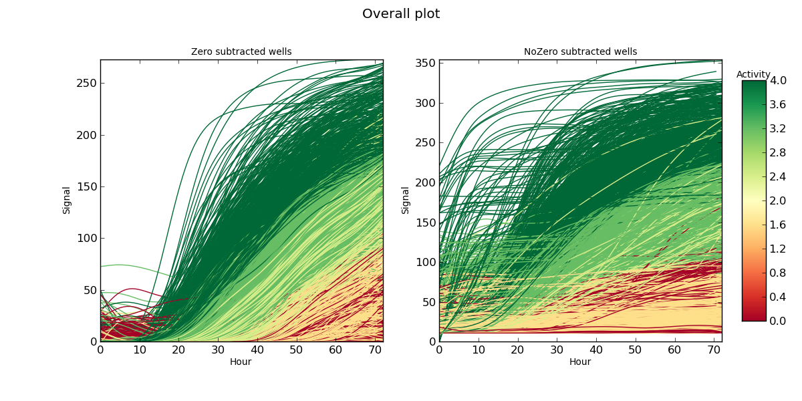OverallCateg.png overall curves plot
The whole PM experiment in one plot for each category, as indicated inside the project; time (expressed in hours) in the x-axis, signal in the y-axis. The color of each curve corresponds to the AV associated to each curve.
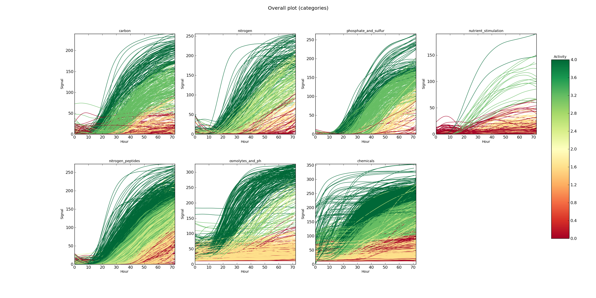Activity.png AV values distribution
Distribution plots of each AV value in the whole PM experiment and divided by organism.
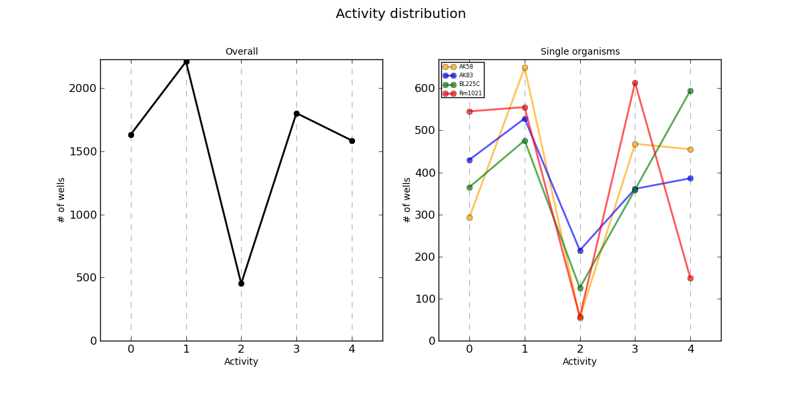ActivityZero.png AV values distribution
Distribution plots of each AV value divided by organism. The curves are separated in those in which the control signal has been subtracted and those not.

ActivityCateg.png AV values distribution
Distribution plots of each AV value divided by organism and category.
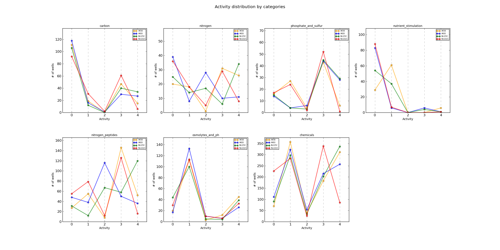ActivityBoxplot.png AV values distribution
Distribution boxplots of each AV value in the whole PM experiment and divided by organism.
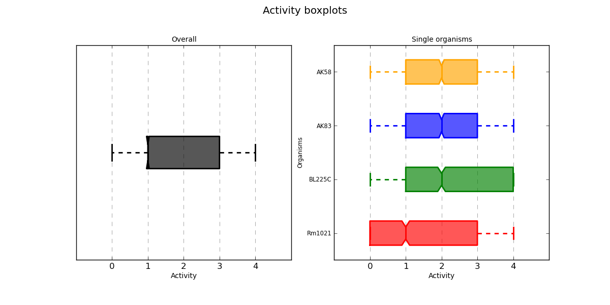ActivityCategBoxplot.png AV values distribution
Distribution boxplots of each AV value divided by organism and category.
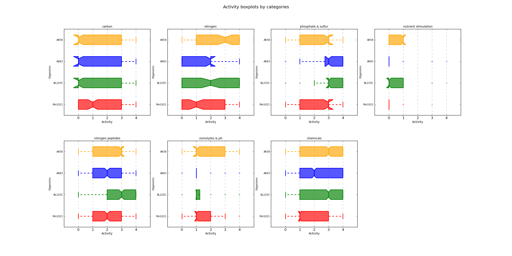